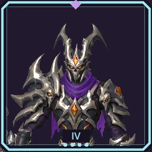
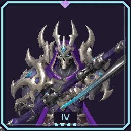
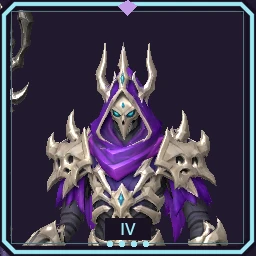
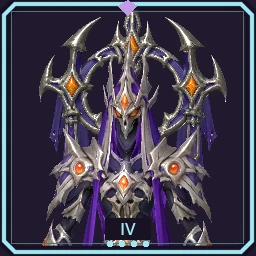
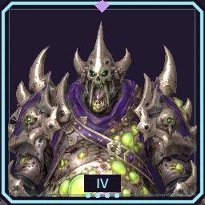
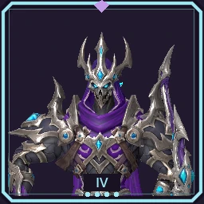

Frontline pressure
The Grave Knights
Mark enemies for increased physical damage, or break through armour with the Death Knight path.
View all seven unit stages
T1 Grave Knight
PATH AT2 Graveguard
T3 Graveguard
T4 Graveguard
PATH BT2 Death Knight
T3 Death Knight
T4 Death Knight

Sweeping blades and rapid cuts
The Reapers
Wraithscythes sweep through groups. Soulrend punishes diseased enemies; its T4 form alternates two blades.
View all seven unit stages
T1 Grave Reaper
PATH AT2 Wraithscythe
T3 Wraithscythe
T4 Wraithscythe
PATH BT2 Soulrend
T3 Soulrend
T4 Soulrend

Control the ground. Raise the payoff.
The Necromancers
Bonebinders channel a slowing damage zone. Corpsecallers consume infected corpses for Shadow explosions instead of firing a basic attack.
View all seven unit stages
T1 Bone Acolyte
PATH AT2 Bonebinder
T3 Bonebinder
T4 Bonebinder
PATH BT2 Corpsecaller
T3 Corpsecaller
T4 Corpsecaller

Piercing bolts or relentless beams
The Liches
Soulflame Lancers pierce multiple enemies. Hovering Revenants channel orange beams that grow stronger against the same target.
View all seven unit stages
T1 Lich Adept
PATH AT2 Soulflame Lancer
T3 Soulflame Lancer
T4 Soulflame Lancer
PATH BT2 Graveflame Revenant
T3 Graveflame Revenant
T4 Graveflame Revenant

Spread the infection
The Plaguebearers
Unarmed Rotmaws spew a wide cone of Disease. Blight Catapults launch payloads that shatter into a short-lived infection cloud.
View all seven unit stages
T1 Plaguebearer
PATH AT2 Rotmaw
T3 Rotmaw
T4 Rotmaw
PATH BT2 Blight Catapult
T3 Blight Catapult
T4 Blight Catapult

Infect from afar or pick off distant threats
The Grave Archers
Blight Archers prefer enemies that are not yet infected. Soulflame Archers gain bonus hit damage when firing from at least four cells away.
View all seven unit stages
T1 Grave Archer
PATH AT2 Blight Archer
T3 Blight Archer
T4 Blight Archer
PATH BT2 Soulflame Archer
T3 Soulflame Archer
T4 Soulflame Archer